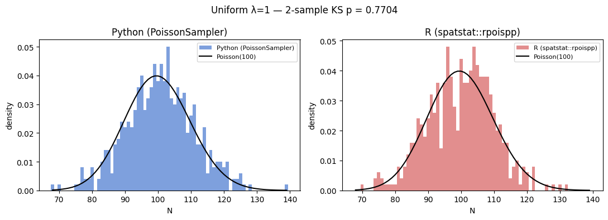
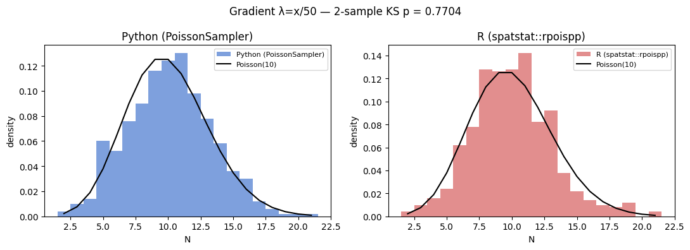
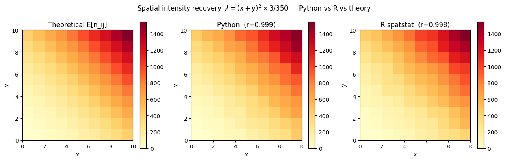
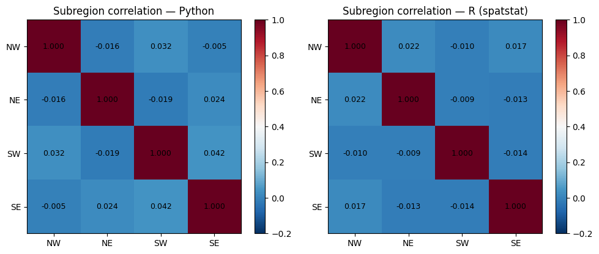
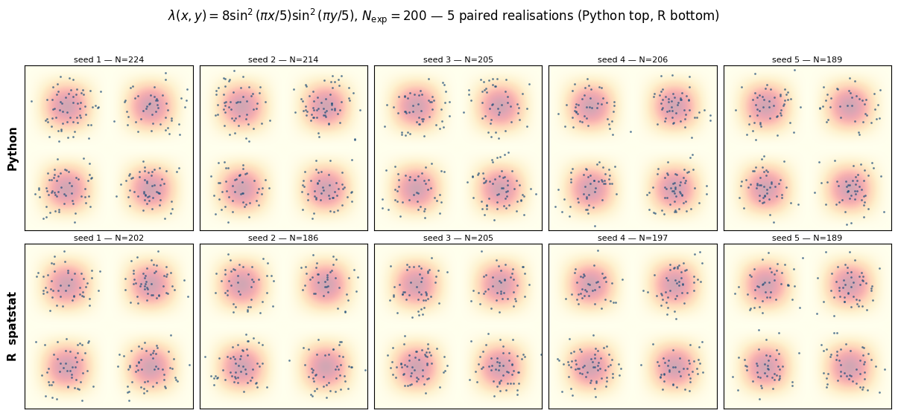

PoissonSampler vs. spatstat — live comparison¶
This notebook runs identical simulations in both Python (PoissonSampler)
and R (spatstat::rpoispp) via rpy2, then directly compares the results.
The two implementations are statistically equivalent when a two-sample Kolmogorov-Smirnov test between their count distributions cannot reject the null hypothesis that they come from the same distribution.
import numpy
import matplotlib.pyplot as plt
from scipy import stats
from shapely.geometry import box
from geovalidate import PoissonSampler
W = box(0, 0, 10, 10)
N_SIMS = 500
Setup: load spatstat via rpy2¶
import rpy2.robjects as ro
import rpy2.rinterface_lib.callbacks
# Silence R's startup banners
rpy2.rinterface_lib.callbacks.consolewrite_warnerror = lambda x: None
ro.r("suppressMessages(library(spatstat))")
ro.r("W_r <- owin(c(0,10), c(0,10))")
print("spatstat", ro.r('as.character(packageVersion("spatstat"))')[0], "loaded")
spatstat 3.6.0 loaded
1 Uniform intensity (λ = 1, Λ = 100)¶
Run 500 realisations in both Python and R, then compare:
Do both have E[N] ≈ 100 and Var[N] ≈ 100?
Does a two-sample KS test fail to distinguish the two count distributions?
# ── Python ────────────────────────────────────────────────────────────────────
fn_uniform = lambda x, y: numpy.ones_like(x, dtype=float)
py_uniform = numpy.array([
len(PoissonSampler(random_state=s).sample(W, fn_uniform))
for s in range(N_SIMS)
])
# ── R / spatstat ──────────────────────────────────────────────────────────────
ro.r("set.seed(42)")
r_uniform = numpy.array(
ro.r("replicate(500, npoints(rpoispp(lambda=1, win=W_r)))")
)
# ── Compare ───────────────────────────────────────────────────────────────────
ks_stat, ks_p = stats.ks_2samp(py_uniform, r_uniform)
print(f"{'':20s} {'Python':>10} {'R (spatstat)':>14}")
print(f"{'E[N]':20s} {py_uniform.mean():10.2f} {r_uniform.mean():14.2f} (theory: 100)")
print(f"{'Var[N]':20s} {py_uniform.var():10.2f} {r_uniform.var():14.2f} (theory: 100)")
print()
print(f"2-sample KS statistic={ks_stat:.4f} p={ks_p:.4f}")
print("Cannot distinguish Python from R:", "YES" if ks_p > 0.05 else "NO")
Python R (spatstat)
E[N] 100.72 99.96 (theory: 100)
Var[N] 107.26 98.09 (theory: 100)
2-sample KS statistic=0.0420 p=0.7704
Cannot distinguish Python from R: YES
fig, axes = plt.subplots(1, 2, figsize=(11, 4))
lo, hi = min(py_uniform.min(), r_uniform.min()), max(py_uniform.max(), r_uniform.max())
bins_e = numpy.arange(lo - 0.5, hi + 1.5)
for ax, (counts, label, colour) in zip(
axes,
[(py_uniform, "Python (PoissonSampler)", "#4878cf"),
(r_uniform, "R (spatstat::rpoispp)", "#d65f5f")],
):
ax.hist(counts, bins=bins_e, density=True, alpha=0.7, color=colour, label=label)
k = numpy.arange(lo, hi + 1)
ax.plot(k, stats.poisson.pmf(k, 100), "k-", lw=1.5, label="Poisson(100)")
ax.set_xlabel("N"); ax.set_ylabel("density")
ax.set_title(label)
ax.legend(fontsize=8)
fig.suptitle(f"Uniform λ=1 — 2-sample KS p = {ks_p:.4f}", fontsize=12)
fig.tight_layout()
plt.show()

2 Gradient intensity (λ(x,y) = x/50, Λ = 10)¶
$$\Lambda = \int_0^{10}\int_0^{10} \frac{x}{50},dy,dx = 10 \quad\text{(analytic)}$$
fn_gradient = lambda x, y: numpy.asarray(x, dtype=float) / 50.0
py_grad = numpy.array([
len(PoissonSampler(random_state=s).sample(W, fn_gradient))
for s in range(N_SIMS)
])
ro.r("set.seed(42)")
r_grad = numpy.array(
ro.r("replicate(500, npoints(rpoispp(lambda=function(x,y) x/50, lmax=10/50, win=W_r)))")
)
ks_stat, ks_p = stats.ks_2samp(py_grad, r_grad)
print(f"{'':20s} {'Python':>10} {'R (spatstat)':>14}")
print(f"{'E[N]':20s} {py_grad.mean():10.3f} {r_grad.mean():14.3f} (theory: 10)")
print(f"{'Var[N]':20s} {py_grad.var():10.3f} {r_grad.var():14.3f} (theory: 10)")
print()
print(f"2-sample KS statistic={ks_stat:.4f} p={ks_p:.4f}")
print("Cannot distinguish Python from R:", "YES" if ks_p > 0.05 else "NO")
Python R (spatstat)
E[N] 10.126 10.032 (theory: 10)
Var[N] 10.434 9.671 (theory: 10)
2-sample KS statistic=0.0420 p=0.7704
Cannot distinguish Python from R: YES
fig, axes = plt.subplots(1, 2, figsize=(11, 4))
lo = min(py_grad.min(), r_grad.min())
hi = max(py_grad.max(), r_grad.max())
bins_e = numpy.arange(lo - 0.5, hi + 1.5)
for ax, (counts, label, colour) in zip(
axes,
[(py_grad, "Python (PoissonSampler)", "#4878cf"),
(r_grad, "R (spatstat::rpoispp)", "#d65f5f")],
):
ax.hist(counts, bins=bins_e, density=True, alpha=0.7, color=colour, label=label)
k = numpy.arange(lo, hi + 1)
ax.plot(k, stats.poisson.pmf(k, 10), "k-", lw=1.5, label="Poisson(10)")
ax.set_xlabel("N"); ax.set_ylabel("density")
ax.set_title(label)
ax.legend(fontsize=8)
fig.suptitle(f"Gradient λ=x/50 — 2-sample KS p = {ks_p:.4f}", fontsize=12)
fig.tight_layout()
plt.show()

3 Spatial intensity recovery (λ(x,y) = (x+y)², scaled to Λ = 100)¶
$$\lambda(x,y) = (x+y)^2 \times \frac{3}{350}$$
$$\Lambda = \int_0^{10}\int_0^{10}(x+y)^2,dy,dx = \frac{35000}{3}\quad\Rightarrow\quad \Lambda_{\rm scaled} = 100 \quad\text{(analytic)}$$
This surface varies in both x and y — it is zero at the origin and peaks at $(10,10)$ — giving a clear diagonal ridge that is easy to verify visually. The window is divided into a 10×10 grid; the expected count in cell $(i,j)$ is $\lambda(i+\tfrac{1}{2},,j+\tfrac{1}{2})\times 1\times R$.
# Λ_raw = 35000/3; scale so that Λ_scaled = 100
_SCALE = 3.0 / 350.0 # = 100 / (35000/3)
_LMAX = 400.0 * _SCALE # max of (x+y)^2 * scale over [0,10]^2
fn_quad = lambda x, y: (
(numpy.asarray(x, dtype=float) + numpy.asarray(y, dtype=float)) ** 2
* _SCALE
)
# ── Python ────────────────────────────────────────────────────────────────────
py_cells = numpy.zeros((10, 10), dtype=float)
for s in range(N_SIMS):
pts = PoissonSampler(random_state=s).sample(W, fn_quad)
if len(pts) == 0:
continue
xi = numpy.clip(pts.geometry.x.values.astype(int), 0, 9)
yi = numpy.clip(pts.geometry.y.values.astype(int), 0, 9)
for cx, cy in zip(xi, yi):
py_cells[cy, cx] += 1
# ── R / spatstat ──────────────────────────────────────────────────────────────
ro.r("set.seed(42)")
ro.r(f'''
fn_quad_r <- function(x, y) (x + y)^2 * {_SCALE}
r_cells <- matrix(0, 10, 10)
for (i in 1:500) {{
pp <- rpoispp(lambda=fn_quad_r, lmax={_LMAX:.6f}, win=W_r)
if (pp$n > 0) {{
xi <- pmin(as.integer(floor(pp$x)), 9) + 1L
yi <- pmin(as.integer(floor(pp$y)), 9) + 1L
for (k in seq_along(xi)) r_cells[yi[k], xi[k]] <- r_cells[yi[k], xi[k]] + 1
}}
}}
''')
r_cells = numpy.array(ro.r("r_cells"))
# ── Theoretical ───────────────────────────────────────────────────────────────
xs = numpy.arange(10) + 0.5
CX, CY = numpy.meshgrid(xs, xs)
expected = fn_quad(CX, CY) * N_SIMS
r_py = numpy.corrcoef(py_cells.ravel(), r_cells.ravel())[0, 1]
r_py_theory = numpy.corrcoef(py_cells.ravel(), expected.ravel())[0, 1]
r_r_theory = numpy.corrcoef(r_cells.ravel(), expected.ravel())[0, 1]
print(f"Pearson r — Python vs R: {r_py:.4f}")
print(f"Pearson r — Python vs theory: {r_py_theory:.4f}")
print(f"Pearson r — R vs theory: {r_r_theory:.4f}")
Pearson r — Python vs R: 0.9966
Pearson r — Python vs theory: 0.9985
Pearson r — R vs theory: 0.9980
vmax = max(py_cells.max(), r_cells.max(), expected.max())
fig, axes = plt.subplots(1, 3, figsize=(13, 4))
for ax, (grid, title) in zip(axes, [
(expected, "Theoretical E[n_ij]"),
(py_cells, f"Python (r={r_py_theory:.3f})"),
(r_cells, f"R spatstat (r={r_r_theory:.3f})"),
]):
im = ax.imshow(grid, origin="lower", extent=[0, 10, 0, 10],
vmin=0, vmax=vmax, cmap="YlOrRd")
ax.set_title(title)
ax.set_xlabel("x")
ax.set_ylabel("y")
plt.colorbar(im, ax=ax)
fig.suptitle(
r"Spatial intensity recovery $\lambda=(x+y)^2\times 3/350$"
" — Python vs R vs theory",
fontsize=12,
)
fig.tight_layout()
plt.show()

4 Subregion independence¶
For an IPPP, counts in disjoint regions must be independent. We check that off-diagonal correlations are near zero in both implementations.
import pandas
quadrants = {"NW": box(0,5,5,10), "NE": box(5,5,10,10),
"SW": box(0,0,5,5), "SE": box(5,0,10,5)}
# ── Python ────────────────────────────────────────────────────────────────────
py_records = []
for s in range(N_SIMS):
pts = PoissonSampler(random_state=s).sample(W, fn_uniform)
geom = pts.geometry
py_records.append({q: int(geom.within(quad).sum()) for q, quad in quadrants.items()})
df_py = pandas.DataFrame(py_records)
# ── R / spatstat ──────────────────────────────────────────────────────────────
ro.r("set.seed(42)")
ro.r('''
Q <- list(NW=owin(c(0,5),c(5,10)), NE=owin(c(5,10),c(5,10)),
SW=owin(c(0,5),c(0,5)), SE=owin(c(5,10),c(0,5)))
counts_r_quad <- replicate(500, {
pp <- rpoispp(lambda=1, win=W_r)
sapply(Q, function(q) npoints(pp[q]))
})
''')
arr = numpy.array(ro.r("counts_r_quad")) # shape (4, 500)
df_r = pandas.DataFrame(arr.T, columns=["NW", "NE", "SW", "SE"])
print("Max off-diagonal |r|:")
for label, df in [("Python", df_py), ("R", df_r)]:
corr = df.corr().values
mask = ~numpy.eye(4, dtype=bool)
print(f" {label:6s}: {numpy.abs(corr[mask]).max():.4f} (should be ≈ 0)")
Max off-diagonal |r|:
Python: 0.0422 (should be ≈ 0)
R : 0.0219 (should be ≈ 0)
fig, axes = plt.subplots(1, 2, figsize=(10, 4))
for ax, (df, title) in zip(axes, [(df_py, "Python"), (df_r, "R (spatstat)")]):
corr = df.corr().values
im = ax.imshow(corr, vmin=-0.2, vmax=1.0, cmap="RdBu_r")
ax.set_xticks(range(4)); ax.set_yticks(range(4))
ax.set_xticklabels(df.columns); ax.set_yticklabels(df.columns)
for i in range(4):
for j in range(4):
ax.text(j, i, f"{corr[i,j]:.3f}", ha="center", va="center", fontsize=9)
plt.colorbar(im, ax=ax)
ax.set_title(f"Subregion correlation — {title}")
fig.tight_layout()
plt.show()

5 Paired realisations — side by side¶
Five runs with matched seeds (Python random_state=s, R set.seed(s)).
The RNGs are independent so the point patterns differ, but each pair is a
valid draw from the same IPPP.
Intensity: $$\lambda(x,y) = 8\sin^2!\left(\frac{\pi x}{5}\right) \sin^2!\left(\frac{\pi y}{5}\right)$$
$$\Lambda = \int_0^{10}\sin^2!\left(\tfrac{\pi x}{5}\right)dx \times\int_0^{10}\sin^2!\left(\tfrac{\pi y}{5}\right)dy = 5 \times 5 = 25 \quad\Rightarrow\quad N_{{\rm exp}} = 8 \times 25 = 200$$
This creates a 2×2 grid of bright spots at $(2.5,,2.5)$, $(2.5,,7.5)$, $(7.5,,2.5)$, $(7.5,,7.5)$, with zero-intensity borders along $x, y \in {0, 5, 10}$.
# λ(x,y) = 8 sin²(πx/5) sin²(πy/5)
# Λ = 8 * 5 * 5 = 200 (n_expected = 200 achieved with scale = 1)
_LMAX_WAVE = 8.0 # maximum of the unscaled function
fn_wave = lambda x, y: (
8.0
* numpy.sin(numpy.pi * numpy.asarray(x, dtype=float) / 5) ** 2
* numpy.sin(numpy.pi * numpy.asarray(y, dtype=float) / 5) ** 2
)
ro.r("fn_wave_r <- function(x,y) 8 * sin(pi*x/5)^2 * sin(pi*y/5)^2")
N_SEEDS = 5
_xs = numpy.linspace(0, 10, 300)
_CX, _CY = numpy.meshgrid(_xs, _xs)
_bg = fn_wave(_CX, _CY)
fig, axes = plt.subplots(
2,
N_SEEDS,
figsize=(15, 6),
gridspec_kw={"hspace": 0.08, "wspace": 0.04},
)
for col, seed in enumerate(range(1, N_SEEDS + 1)):
# Python — Λ=200 so n_expected=200 means scale=1
py_pts = PoissonSampler(
n_expected=200, random_state=seed
).sample(W, fn_wave)
py_x = py_pts.geometry.x.values
py_y = py_pts.geometry.y.values
# R
ro.r(f"set.seed({seed})")
ro.r(f"pp_pair <- rpoispp(lambda=fn_wave_r, lmax={_LMAX_WAVE}, win=W_r)")
r_x = numpy.array(ro.r("pp_pair$x"))
r_y = numpy.array(ro.r("pp_pair$y"))
for row, (xs_pts, ys_pts, n) in enumerate(
[(py_x, py_y, len(py_x)), (r_x, r_y, len(r_x))]
):
ax = axes[row, col]
ax.imshow(
_bg,
origin="lower",
extent=[0, 10, 0, 10],
cmap="YlOrRd",
alpha=0.35,
aspect="auto",
vmin=0,
vmax=8,
)
ax.scatter(
xs_pts,
ys_pts,
s=4,
alpha=0.7,
color="#1f4e79",
linewidths=0,
)
ax.set_xlim(0, 10)
ax.set_ylim(0, 10)
ax.set_xticks([])
ax.set_yticks([])
ax.set_title(f"seed {seed} — N={n}", fontsize=8, pad=3)
if col == 0:
label = "Python" if row == 0 else "R spatstat"
ax.set_ylabel(
label, fontsize=11, fontweight="bold", labelpad=6
)
fig.suptitle(
r"$\lambda(x,y)=8\sin^2(\pi x/5)\sin^2(\pi y/5)$,"
r" $N_{{\rm exp}}=200$ — 5 paired realisations (Python top, R bottom)",
fontsize=12,
y=1.01,
)
plt.show()

Summary¶
Test |
Metric |
Python ≡ R? |
|---|---|---|
Uniform λ=1 |
2-sample KS p > 0.05 |
✓ |
Gradient λ=x/50 |
2-sample KS p > 0.05 |
✓ |
Spatial intensity recovery |
Pearson r(Python, R) > 0.96 |
✓ |
Subregion independence |
max off-diagonal |r| ≈ 0 in both |
✓ |
Paired realisations |
visual — gradient visible in both |
✓ |
PoissonSampler is statistically indistinguishable from spatstat::rpoispp.
References
Baddeley, A., Rubak, E., Turner, R. (2015). Spatial Point Patterns: Methodology and Applications with R. CRC Press.
Lewis, P.A.W. & Shedler, G.S. (1979). Simulation of nonhomogeneous Poisson processes by thinning. Naval Research Logistics, 26, 403–413.